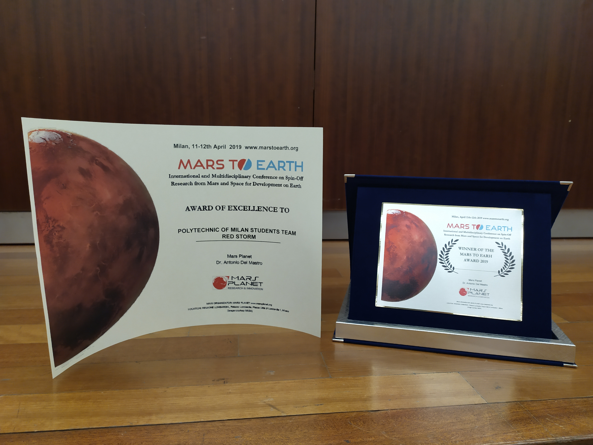
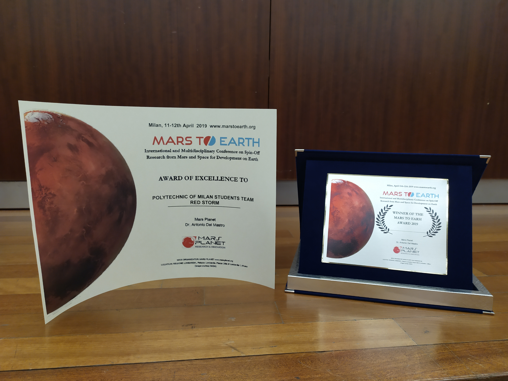

Redstorm
Mars surface conditions have critical differences than Earth’s. Therefore; while planning a Mars exploration, astronauts should be trained for extreme and unknown conditions. For these trainings, simulations are essential and making these simulations as realistic as possible prepares the astronauts better.
Redstorm is an undersuit system of sensors designed for a constant monitoring of astronaut’s vital parameters and establishing communication between the astronaut and the space station during a Mars expedition simulation.
This product system inspired by fictional super hero suits, is an augmented interface for the astronaut helmet, a wearable sensor unit and a communication app between the astronaut and the space station. The astronaut wears a set of sensors that collects his life parameters and external environment parameter and sends this data in real time to a network server that has 1 or more clients each client represents the astronaut; the display could be on VR/AR that emulates the astronaut’s helmet and the space station.
With Redstorm in any moment astronaut can check his life parameters by voice commands through speech recognition. In case that something goes out of the set threshold parameters it triggers an alert that inform either the station or the astronaut. Also; from the space station all the exploration and the parameters can be tracked and logged.
 
